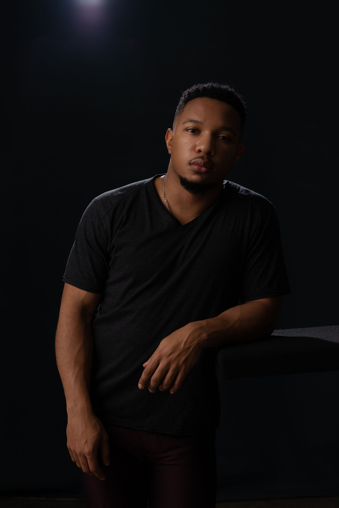

BraxMov is a clarity content studio for businesses with hard-to-explain offers. I help founders and teams turn confusing messaging into clear, useful content through explainer videos, motion graphics, founder content, presentations, and sales-enablement assets. My work sits at the intersection of strategy, storytelling, and execution, so people understand what you do faster, trust it quicker, and act with more confidence.”

I’m Braxton Joy — a Clarity Content Strategist & Producer.
I help businesses with complex, technical, or hard-to-explain offers turn confusion into clear messaging and useful content. My work combines strategy, storytelling, and execution to help people understand what a business does faster.
Over the years, I’ve created content across healthcare, government, automotive, financial services, presentations, internal communications, and branded campaigns. That experience taught me how to take dense information, shape it into something clear, and build visuals that support trust, communication, and action.
I do more than make content look good. I help identify what is unclear, simplify the message, and turn it into videos, motion graphics, presentations, and supporting assets that people can actually use.
Turn confusion into clarity.
Let’s build content that explains your value clearly.Identify where buyers get confused, tighten the message, and clarify what your business actually needs to say before content is created.
Turn complex products, services, or processes into clear visual content through explainer videos, motion graphics, and short-form storytelling.
Create founder videos, talking-head content, FAQ clips, customer-facing visuals, and content your sales team can actually use.
Build polished decks, visual one-pagers, internal communications, onboarding content, and supporting assets that make information easier to follow.
Supported the creative development process behind Bren Joy’s brand and release-era content, contributing to visual storytelling, campaign alignment, and post-production execution. Worked behind the scenes to help shape cohesive content and brand presentation across audience-facing assets during key growth phases.
I led creative direction, scriptwriting, and post-production for this cinematic brand film, designed to elevate Percy Bell’s identity through emotionally driven storytelling. The piece was built as part of a larger content campaign to strengthen brand positioning, deepen audience connection, and present the brand with a premium, story-first feel.
As part of the creative team, I helped shape the visual direction and storytelling approach for this cinematic music video tied to the campaign for “Down Like That.” The goal was to support the single’s emotional tone with narrative-driven visuals, dynamic editing, and a polished creative approach that strengthened audience connection and campaign impact.
I led the creative direction for this promotional campaign video, built to capture the league’s competitive spirit, community energy, and culture. Using fast-paced visuals and strong pacing, the piece was designed to celebrate the players, showcase the atmosphere, and create a high-energy asset for social promotion and audience engagement.
I led creative direction for this social campaign video built to elevate K2P Fitness’s online presence through high-energy visuals, motivational messaging, and strategic content storytelling. The campaign was designed to position the brand as premium and results-driven while creating stronger audience engagement through a clear, authentic message.
Let’s Build Something Clear, Strong, and Useful.